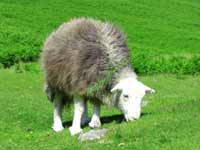
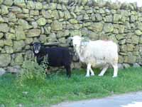
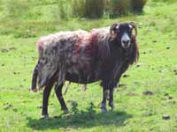
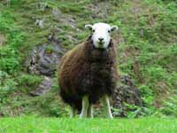

Herdwick Sheep
Grazing unconcernedly on the edges of the open sided mountain roads, staring curiously and anxiously from the hillocks and bracken of the steep fell-sides, the Herdwick sheep of the area maintain an alert and heedful vigilance of the humans who have chosen to walk and climb some of the most spectacular landscapes in Europe.

What of the name and from where do they originate? Herdwyck, meaning sheep pasture, and Herd-Vic, Norse, for sheep farm, suggest they were introduced to the area by early Norse settlers. However, there is a school of thought which believes they are the descendants of a flock washed ashore on the Cumbrian coast following the wreck of a Spanish Armada. What ever, they are regarded as the most hardy of all Britains breeds of hill sheep and are found only on the fells of the English Lake District and Cumbria where they have become an essential component of the rugged scenery.

Fortunately for the owners, they are territorial creatures, and once introduced to “their” section of fell-side seldom stray from it. This characteristic is known as a “Heafing Instinct”. The farmer owners are able to recognize their flock by means of an identification mark called a “lug” where a piece of the ear (or ears) has been removed eg; a hole or a triangular shape clipped out of the ear, and, by an assorted coloured chemical dye markings on the body. All marks are recorded in the “Shepherds Guide”.

They are “gathered” from the fells 4-5 times a year and herded to the lower land and farmsteads for either dipping, spraying, shearing, mating and lambing. Demonstrations of shearing are often featured in the local June/July agricultural shows. Shearing is now performed with electric shears but the old art of clipping by hand shears has not been entirely lost. “Lakeland Shears” is an annual July event held in Cockermouth. This contest attracts shearers from all over the world and it only uses Herdwick sheep.

The Herdwick makes an important environmental contribution by close grazing the ground cover of the fell-sides, and their meat, with its distinctive flavour is featured regularly on menus of local produce throughout the area. One can find a very tasty “Herdi-Burger” on sale in a cosy tea-room located in the Borrowdale Valley.
Many of the sheep farms are owned by the National Trust including the ones left to the Trust by Beatrix Potter who was a keen breeder and supporter of the Herdwick.
They have a distinct place and role in our Lakeland and Cumbria community and it is impossible to imagine our fells without the sight and sounds of the resilient hardy Herdwick. Hopefully they will survive for as long as the land on which they roam.